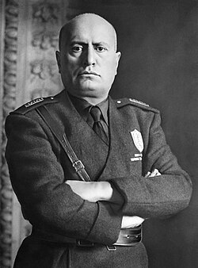
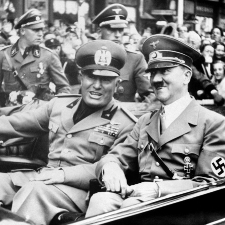
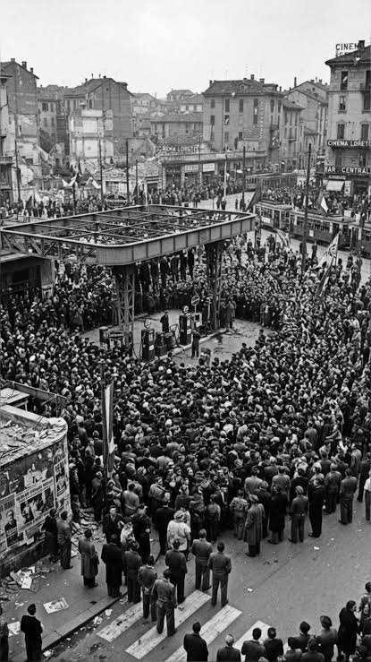

Benito Mussolini: Rise, Fascist Rule, and Fall
Benito Mussolini built the world's first fascist dictatorship in postwar Italy, aligned the country with Nazi Germany during World War II, and lost power amid military defeats, domestic crisis, and Allied invasion.
Postwar Unrest and the Rise of Fascism

Italy emerged from the First World War with heavy human and financial costs alongside deep frustration over wartime territorial promises that felt unfulfilled at the peace table. Between 1919 and 1922, inflation, demobilization strain, strikes, factory occupations, and clashes between socialists and nationalists left liberal governments looking fragile.
Breaking from his earlier socialist roots, Mussolini organized the National Fascist Party and paramilitary Blackshirt squads that used intimidation and violence against left-wing organizers and strikes. Many industrialists, landowners, and conservative officials viewed Fascism less as a threat than as a forceful check against socialist revolution.
In October 1922, Fascist mobilization culminating in the March on Rome pressured King Victor Emmanuel III and political leaders into appointing Mussolini Prime Minister rather than risk civil conflict or martial law. Once in office, Mussolini moved step by step to concentrate executive power.
Through electoral law changes, intimidation at the 1924 polls, the silencing of opposition after the murder of deputy Giacomo Matteotti, and special decrees in 1925 and 1926, rival parties were banned, press freedom was curbed, and parliament became subordinate to the head of government.
Propaganda and state institutions promoted Mussolini as 'Il Duce'—a symbol of discipline, order, and national revival. Public works, youth organizations, and nationalist rhetoric sought to project authority even where everyday living standards remained modest.
Economic grievances and fear of political disorder shaped Italian politics in the immediate aftermath of the First World War. Returning soldiers faced uncertain prospects, inflation squeezed fixed incomes, and frequent strikes unsettled business owners and landowners who doubted whether liberal cabinets could restore lasting stability.
Imperial Ambitions and Alignment with Nazi Germany

Foreign policy under Fascist rule leaned heavily on prestige, Mediterranean influence, and imperial expansion. In 1935, Italy invaded Ethiopia, drawing international condemnation and League of Nations sanctions while deepening Mussolini's distance from Britain and France.
Intervention in the Spanish Civil War and closer diplomatic ties with Adolf Hitler gradually pulled Italy toward Berlin. Formalized through agreements such as the Rome-Berlin Axis and the Pact of Steel in 1939, the partnership bound Italy to a much larger and more heavily industrialized German partner.
When war broke out in Europe in September 1939, Italy initially declared non-belligerency because its armed forces were still recovering from earlier campaigns and lacked sufficient fuel, modern equipment, and stockpiles for a prolonged war.
In June 1940, as France neared defeat, Mussolini brought Italy into World War II hoping for swift gains in southern France, the Mediterranean, and Africa. Instead, Italian forces quickly ran into stiff resistance and overstretched logistics.
Campaigns in Greece, North Africa, and East Africa exposed gaps in equipment, transport, and command coordination. Repeatedly, German forces had to intervene to stabilize fronts in North Africa and the Balkans, turning Italy from a co-equal partner into the junior member of the Axis.
Once in power, Mussolini's regime combined state censorship, police surveillance, and organized youth and leisure associations to project control over public life. Even as Fascist propaganda celebrated order and national revival, real military readiness and industrial capacity remained limited compared with great powers preparing for industrial warfare.
Collapse of the Regime, Salò, and End of the War

By summer 1943, years of rationing, air raids on Italian cities, heavy casualties, and the Allied invasion of Sicily brought the war home to the Italian peninsula. Support for Mussolini's leadership eroded even inside the Fascist hierarchy itself.
On July 25, 1943, the Fascist Grand Council passed a motion calling on the king to resume full constitutional command. King Victor Emmanuel III had Mussolini arrested upon leaving the palace and appointed Marshal Pietro Badoglio to lead a new government.
In September 1943, Italy announced an armistice with the Allies, prompting German forces to occupy much of northern and central Italy. German commandos rescued Mussolini from mountain confinement and installed him as head of a German-backed puppet state—the Italian Social Republic—based near Lake Salò.
During its final nineteen months, the Salò regime operated under tight German military and police control while civil war and partisan resistance flared across northern Italy. Rather than restoring independent Fascist authority, the rump state underscored how completely Mussolini depended on German arms.
As Allied forces advanced northward and German defenses collapsed in spring 1945, Mussolini tried to escape toward Switzerland in April 1945 with companions and German escorts, only to be captured and executed by Italian partisans near Lake Como, marking the violent end of twenty-two years of Fascist rule.
Alliance commitments with Berlin steadily narrowed Italy's room for independent maneuver as the war progressed. When Allied landings in Sicily and mounting hardships on the home front converged in mid-1943, the Fascist leadership fractured from within, ending Mussolini's formal hold on state power and plunging northern Italy into harsh occupation and civil conflict.
Controlling media, schools, and public ceremonies helped the Fascist regime project strength at home and abroad, yet economic strain and uneven military modernization left Italy vulnerable once drawn into prolonged European and Mediterranean fighting.
By the time Allied troops pushed up the Italian peninsula and partisan resistance expanded in the north, Mussolini's room to maneuver had vanished. His downfall underscored the fragility of a regime that staked national survival on military expansion and alignment with Nazi Germany.
During the 1930s, the Fascist state used public works, ceremonies, and press control to project stability and purpose, while racial laws introduced in 1938 marked a harsh turn toward Nazi-style persecution in Fascist policy.
As Allied forces advanced northward through Italy in 1944 and early 1945, food shortages, air raids, and clashes between partisans and Fascist or German forces left northern Italy deeply divided until the final collapse of Axis resistance in spring 1945.
In postwar Italy, the collapse of Fascism cleared the way for a constitutional republic and a long political reckoning over twenty years of authoritarian rule, empire-building, and wartime alignment with Nazi Germany.
For historians of twentieth-century Europe, Italy's trajectory under Mussolini illustrates how political crisis, paramilitary force, and ambitious foreign policy can hollow out democratic institutions and draw a nation into ruinous conflict.
Ultimately, Mussolini's rise and fall remains a central case study in how authoritarian rule consolidates power through crisis and propaganda, only to face severe reckoning when military ambitions outrun economic and strategic reality.